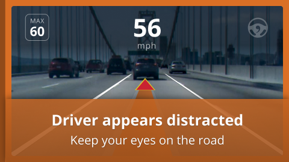

OpenPilot: An OSS Driving Agent
Sudhanv Apte
Table of Contents
Introduction

Openpilot is a level 2 driving agent
Retrofitted to the car
Designed to drive like a human
How does OpenPilot work?
How does it talk to the car?
Uses CAN to intercept calls
To steer OpenPilot puts torque on the wheel
Hardware abstraction to generalise all the cars
Model

Tries to predict where to driver
Outputs DESIRE
Uses GRU to store temporal information
Controls
- Once the trajectory is decided, the planner executes it.
- Lateral and Longitudinal both use MPC to smoothen and optimize the plans
- Longitudinal uses the radar to estimate the lead car and computes the accelaration.
Driver Monitoring

Checks if driver is paying attention
Tracks face, eyes, sunglasses
Disengages if the driver isnt paying attention
Safety
- Enforces driver to pay attention
- Safety code running on the CAN interface
- Pressing Gas or Break cancels OpenPilot
Implications
- Open source, MIT license implies anybody can fork it
- End to End replicates human driving
- Can be the android to Tesla’s Autoilot